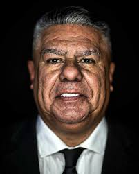

Claudio Tapia y el presente del futbol argentino
El presidente de la AFA analizo el momento actual del torneo y los proximos objetivos institucionales.
Panorama general
Se espera una agenda enfocada en infraestructura, competitividad y desarrollo de juveniles.